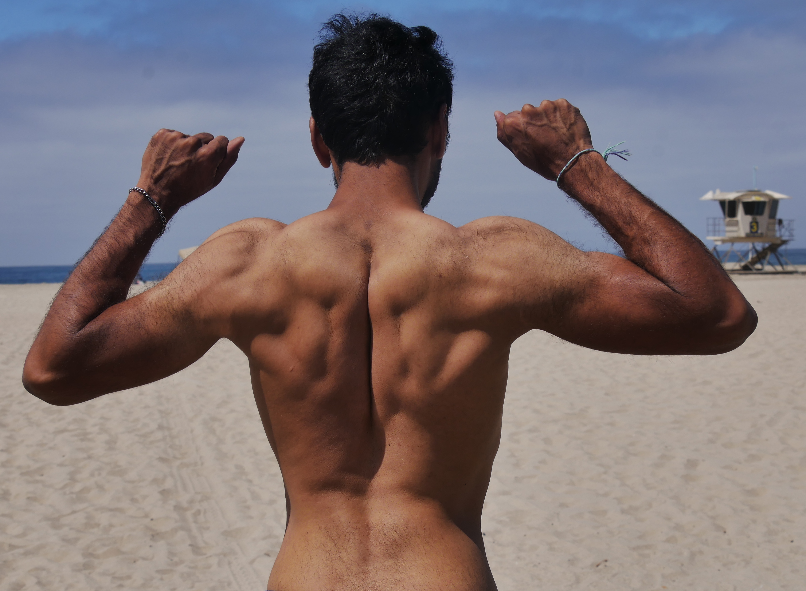
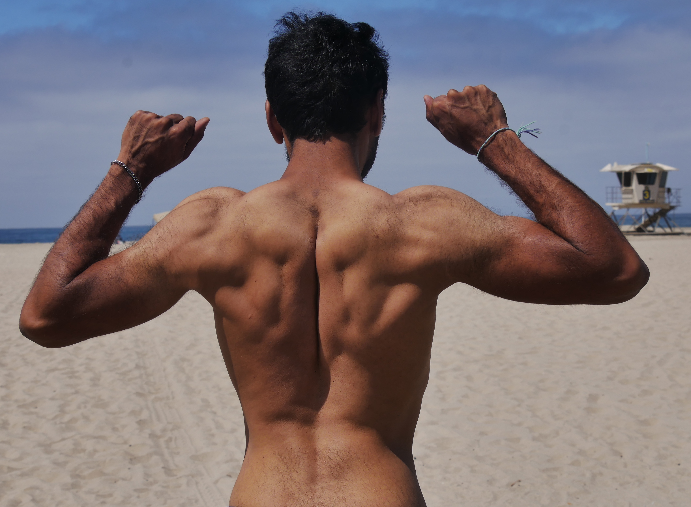
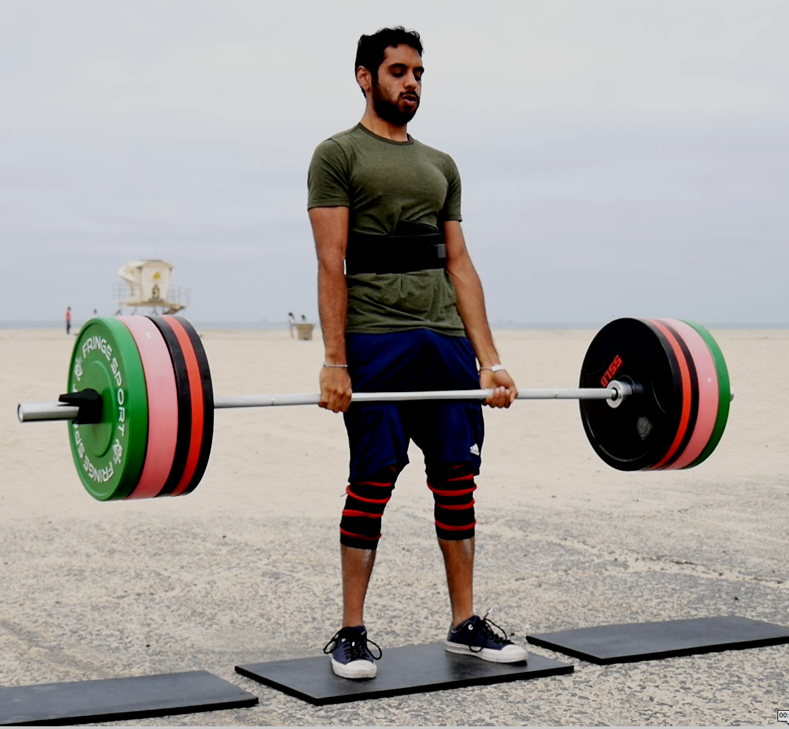
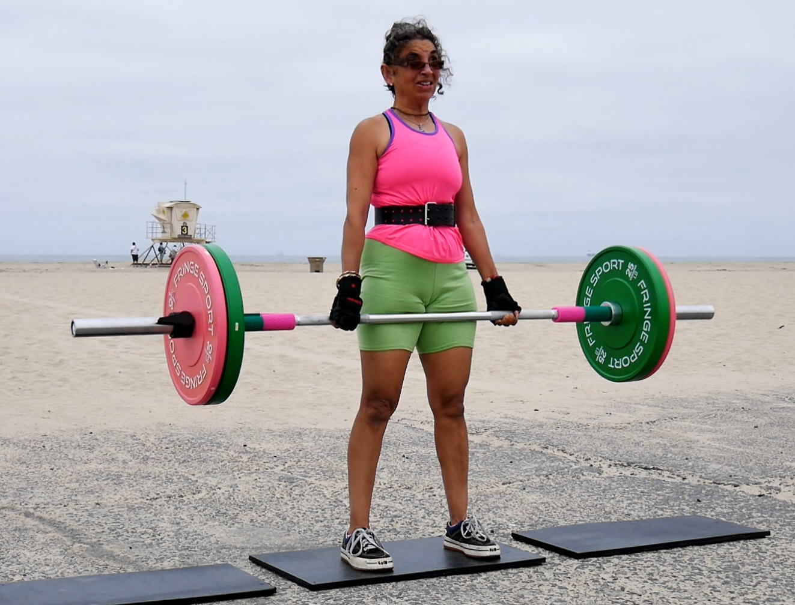

Positive outcomes are correlated with physical activity
Mon 07 June 2021tldr A structured fitness plan can greatly improve your career and your quality of life as a knowledge worker. Ignoring health may work short term but catches up to you slowly and subtly. I say this being someone who neglected my health to while trying to get ahead at work and then subsequently spending years losing the weight and getting back to a healthier state. It's really really really worth finding ways to include a baseline level of physical activity in your life. It yields dividends in more ways than you may anticipate.
I feel that most exercise related posts are either written to too general audience, written for fitness professionals, or are total scams. I'm writing this blog post to hopefully show other knowledge workers transformational change is possible and very likely worth it, even if for no other reason than to make you a better knowledge worker.
If you'd like to see me write more about this topic let me know. Send me an email, or @ me on twitter, or however else you can get a hold of mme. Happy to "open source" my knowledge just like I open source my code.
Why are you posting this?
I have a hypothesis that many of my desk bound folks are unaware of all of the benefits of physical activity can have on career specifically, or their lives in general. I think we also tend to easily sacrifice our long term health for our career. I say this from my experience going from a skinny nerd to one that became overweight from being "too career focused", I was found myself in a situation where frankly life just "didn't feel great". For many reasons I felt I had to make a change and after much concerted efforts I've been able to make meaningful progress and want to plainly say the benefits are greater in number and in magnitude than I had ever expected
For one for the first time ever I am not embarrassed about my self appearance.
 

But aside from that there are numerous benefits I've found in my knowledge working career.
Before that though a disclaimer. I'm definitely not a medical professional. This is based on my own experience. I am a professional statistician thought so I can say these are not controlled studies either. At best they are a highly biased observational study of with a sample of one. However I've gone from feeling pretty poorly each day and being warned about my weight by doctor, to feeling so much better I feel like I have to share something. So I'm writing this in case it inspires someone to be a better version of themselves. I genuinely believe that its more possible and more beneficial than you may think.
So get to it already, what was better?
I'll primarily speak to the short term benefits because I don't want to wait 50 years to make this blog post. I've experienced the usual ones you read about including increased energy, better sleep, and improved mood. For instance I don't have random pains when I wake up and In general I tend to feel like less of my days in general are less of a slog.
But more specifically I find there is a host of benefits for knowledge workers. For me those have ranged from specific physical improvements related to desk to work to more holistic outlook changes. Overall I believe its put me on a better position to navigate my career with more productivity and reduced anxiety. These benefits for have included
Desk work that doesn't hurt anymore
Typing used to hurt, literally. After using a keyboard for an extended period of time I used to get wrist pains and had to take breaks. I was 27 at this time so my body failing me was new phenomena. It also meant that I was able to output less work, and remember the occasional days where I'd grit through the pain to get something done for a deadline. This pain is now gone. All my desk related pain is gone and most pain in general. For me weightlifting was a better fix for desk ergonomics than any tutorial I read online or seminar at work
Increased mental focus
IMHO strenuous physical exercise trains mental toughness and focus. It's very easy with knowledge work feel productive when you're actually unfocused multitasking or your mind is wandering elsewhere. Conversely it's really hard to multitask when you're strongly physically exerting yourself. Your performance notably drops. The focus trained in physical exercise has been helped me stay in "flow states" and get more "deep work" done.
Self owned objective goals
It's hard to objectively measure knowledge work. Ideas are largely judged by other humans and the measure is largely subjective. Physical activity goals by contrast are much more tangible. Its relatively simpler to measure progress of steps taken, weight lifted, duration biked. In particular the time from goal initiation to final measurement usually happens within the day, whereas in knowledge work it can take years.
When I was entirely focused on my career I used to get anxiety about not having a project be well received, or missing a promotion. What I really was letting all progress and accomplishments be measured by others. With my fitness goals I now have a portion of my life where progress is owned entirely by me. This has reduced my self pressure to use work as a sole measure of life progress.
Faster feedback loop
Before when I missed a day of sleep I would mask the effects with caffeine and ignore my reduced mental performance. It'd take a week or so of poor sleep habits before the effects became large enough for me to correct them. These regressions show up more quickly in physical output levels, especially with the objective measurement mentioned above. The same goes for stress levels with work or lack of mental focus. The physical detriment shows up quickly and I'm able to self correct much faster, especially before it affects my knowledge work too severely.
Increased confidence in my navigating my career
"Knowing things" is the bare minimum for a knowledge career. Being able to clearly communicate ideas, tactfully push back on requests, or state your own self worth in situations such as performance reviews are important skills in intentionally controlling your destiny. It's hard to do those things when you don't feel confident in yourself. While the amount of weight I can lift, or my body composition should be independent of my self confidence, I find for myself they are correlated. Improvements in my physical self I believe have made me more confident in my knowledge self. I don't wake up wishing I was someone else or that I have to "fake it" to make it.
Downsides
For all the upsides I should mention the downsides. As you may guess I feel the upsides far outweigh the downsides in my case, but will list them here so you can judge for your case
It takes active planning, effort
You really do have to think about what you want to do, why, and how to get there. Then you actually have to do it which can be a slog. Reading hackernews or eating unhealthy foods are all easier and comfortable in the short term. This downside can mitigated by making smaller magnitude changes but then it takes longer for results to appear. Unfortunately a level of dedication and patience is needed.
Harder at the beginning
All of the above is exacerbated at the start, where you both are not getting any of the benefits, but paying the upfront costs of all the planning, confusion, and lack of experience. Like anything this is a learned skilled and takes time to dial in, working through
It can take time
Both of the above take time, the most valuable commodity, especially for knowledge workers. I personally learned to mitigate the "time loss' through a number of strategies but the fact remains that I need set aside dedicated hours in my week. I'll say here I now think my peers use time an excuse way as a false justification to avoid the work but that's a topic for another blog post
Lack of instruction for working professionals
A lot of the content written out there is not targeted for working professionals. Ignoring the blatant scams, much of the material is written for other professional athletes or actors who can work out twice a day or eat 6 carefully measured meals. Cracking open a tupperware of tilapia in multiple meetings each day doesn't fit my life. The all in or not in mentality is a non starer. It a while for me to piece together what worked in my situation, without me losing my job, and likely will for you as well.
So where can you go from here?
If you're compelled to make a change my first suggestion is to thoughtfully write down specific goal you'd like to achieve. This is no different than writing down precise objective functions for statistical model or setting a concrete goal for a team. Saying you want your model to be "more accurate" is about as imprecise as saying "you want to walk more everyday".
The quote “A problem well-defined is a problem half solved.” is applicable here.
Here's my goals for example.
- I was unhappy with my body composition. From lots of internet research I learned I wanted to somewhere around 10% bodyfat
- I am particularly compelled people with high strength performance. I'd like to be able to deadlift 500lbs, squat 400 lbs, and bench 300 lbs.
- I'd also like to be able to perform ring muscle ups for ease. This one is a not so well defined goal but since its a sub goal of the one above I'm ok with that.
These are just some examples, if you'd like to know my other ones feel free to ask.
Should I keep writing about these topics?
I really believe in the power sharing ideas and knowledge with others. Its why so I'm so compelled with "open source" codes and communities, and it's something I believe here as well
I'm can share what I know on topics such as
- Physical fitness as a knowledge worker
- Strength training with a "9 to 5" schedule
- My particular strategy and results for strength gain and fat loss
- Anything else you'd like me to share
If interested get in contact with me. I'm happy to share!
P.S. Weightlifting is really fun (for everyone)
Lastly I'm most proud of my powerlifting ability, much more so than my physical appearance. Here's a picture of a recent deadlift.

It isn't "just for men either". My super awesome role model mom also performing a deadlift. She didn't start weightlifting until her 40s so don't let either age or gender hold you back. If you've been curious about trying out strength training I encourage you to try it out!
